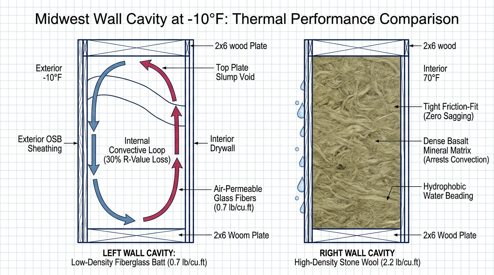

Walk into any lumberyard or home center across the Midwest, and the insulation aisle presents an immediate pricing split: standard pink or yellow fiberglass batts cost roughly 40% less on the shelf than dense stone mineral wool. However, building science laboratory testing reveals that low-density fiberglass functions like an open air filter that derates under extreme winter temperature splits, while hydrophobic stone wool maintains dimensional rigidity, repels water, and resists fire to 2,150°F.
- ✓Convective Airflow Derating: High-density stone wool (2.0–2.5 lbs/cu.ft) mechanically blocks internal air currents, whereas low-density fiberglass (0.7 lbs/cu.ft) allows convective loops that can slash effective R-value by up to 35% at -10°F.
- ✓Hydrophobic Water Shedding: Mineral fibers absorb less than 1% moisture by volume and dry rapidly, whereas loosely woven glass batts sponge bulk water, matting down into soggy, permanently compromised clumps.
- ✓Friction-Fit Springback: Semi-rigid stone wool boards hold continuous friction tension against wood studs without mechanical staples, completely eliminating top-plate sag voids and compression gaps around wiring.
- ✓Basalt Fire Endurance: Spun from volcanic rock, stone wool withstands temperatures exceeding 2,150°F without melting, igniting, or releasing toxic off-gases, providing passive two-hour fire containment in wood framing.
The Lumberyard Aisle at 15°F
On a freezing Tuesday morning in early December, you are standing in the building materials aisle of a Midwest lumberyard or home center in Omaha, Peoria, or Fort Wayne. Outside, a biting 15°F wind is rattling the warehouse loading docks.
In front of you are two stacks of insulation bundles. On the left sits a familiar bundle of pink or yellow fiberglass batts priced at roughly $48. On the right sits a dense, heavyweight green bundle of stone mineral wool priced at $78. For an entire 2,200-square-foot residential framing project, that 40% shelf price difference adds up to roughly $1,400 to $1,800 in raw material costs.
On a contractor's bid sheet or a DIY budget spreadsheet, opting for the lower upfront material cost seems like an easy win. But insulation is not an aesthetic finish that can be swapped out later—it is a permanent structural component sealed behind taped, mudded, and painted drywall for thirty or forty years. When a polar vortex drives the exterior sheathing down to -10°F while your interior drywall sits at 70°F, that 80-degree thermal gradient triggers physical phenomena that nominal shelf R-values never account for.

1. Density & Winter Convective Air Looping
Nominal R-values printed on insulation packaging are derived under ASTM C518 laboratory conditions inside a hermetically sealed test box with zero air movement. Standard residential fiberglass batts have an installed density of only 0.6 to 0.8 pounds per cubic foot. In contrast, stone mineral wool (such as Rockwool Comfortbatt) is manufactured from spun volcanic basalt rock at 2.0 to 2.5 pounds per cubic foot—more than three times the density of glass fibers.
When outdoor temperatures drop to -10°F and indoor air is heated to 70°F across a 5.5-inch wall cavity, that 80-degree thermal gradient creates a buoyant convective loop inside low-density insulation. Warm interior air rises along the warm face of the drywall, migrates over the top of the batt, cools against the freezing exterior OSB sheathing, and drops down to the bottom plate. Research by Oak Ridge National Laboratory (ORNL) confirms that internal convective looping can derate low-density fiberglass batts by 20% to 35% during extreme cold spells.
Stone wool's dense, tightly packed mineral fiber matrix mechanically halts internal air currents before convective loops can establish. Even under severe sub-zero thermal pressure, stagnant air pockets remain locked in place, ensuring the wall assembly delivers its full laboratory-tested thermal resistance when your heating plant needs it most.
- Jobsite Rule: On exterior walls facing prevailing north and west winter winds, specify high-density stone wool (or dense-packed cellulose) over low-density batts to eliminate convective thermal derating.
2. Hydrophobic Water Shedding vs. Saturated Clumping
Water management is where physical chemistry starkly separates glass from basalt rock. Stone wool fibers are treated with a proprietary water-repellent mineral binder during the manufacturing process, making the finished batt completely hydrophobic under ASTM C1104. Water droplets contacting the surface cannot enter the tight capillary structure; liquid beads up and drains downward harmlessly.
Standard fiberglass batts are hydrophilic in practical jobsite conditions. Glass fibers themselves do not absorb liquid, but the loosely woven fiber matrix readily holds water through capillary attraction like a giant sponge. When minor roof leaks, seasonal ice dams, or window casing bypasses introduce bulk water into a framed cavity, fiberglass mats down into a sodden clump, permanently losing its loft and thermal resistance.
Once fiberglass collapses from water exposure, it rarely recovers its original thickness, leaving uninsulated air pockets inside the wall that harbor mold growth against adjacent wood studs. Stone wool does not absorb water, does not lose its dimensional loft when wet, and dries out completely by natural vapor diffusion without degrading its structural shape or rated R-value.
- Jobsite Rule: For exterior kitchen, bathroom, and basement walkout walls where plumbing runs or condensation risks exist, hydrophobic stone wool prevents structural moisture damage and insulation clumping.
3. Friction-Fit Tension vs. Gravitational Sagging
Standard fiberglass batts lack inherent structural stiffness and must be physically stapled through paper kraft facing to the edges of wood framing. Over decades of seasonal humidity swings, thermal expansion, and normal structural vibration, paper tabs pull loose from framing staples. Gravity pulls the flexible fiberglass downward, creating a 2- to 4-inch uninsulated void at the top plate—precisely where buoyant indoor heat exerts the highest escape pressure.
Stone wool batts are manufactured as semi-rigid, self-supporting boards engineered with dimensional springback. When cut 1/2-inch wider than the stud bay and pushed into place, the batt expands outward against the wood studs with continuous friction tension. It requires zero mechanical staples, never slumps down over time, and holds its flush orientation against top and bottom plates for the life of the building.
Equally critical is how each material handles penetrations. Cutting fiberglass around electrical boxes, Romex wiring, and plumbing pipes typically results in torn, bunched batts and uninsulated hidden voids. Stone wool cuts cleanly with a serrated insulation knife like dense bread, allowing trades to notch precise channels around junction boxes and conduit so the cavity remains completely filled without thermal bypasses.
- Jobsite Rule: Cut stone wool batts 1/2-inch oversize using a serrated bread knife or dedicated insulation saw; never compress excess batt material into a cavity, which lowers thermal efficiency.
4. Basalt Non-Combustibility vs. Melting Silica Glass
The raw materials behind each insulation type dictate their structural performance during a residential fire event. Fiberglass is manufactured by spinning molten silica sand and recycled container glass, which reaches its softening and melting point at roughly 1,050°F to 1,100°F. In a typical house fire, flashover temperatures exceed 1,200°F within minutes, causing glass fibers to melt away and exposing wood framing to direct flame impingement.
Stone wool is formed by melting volcanic basalt rock and recycled blast-furnace slag at temperatures exceeding 2,900°F. The resulting mineral fibers are classified as non-combustible under ASTM E136 and withstand temperatures beyond 2,150°F without melting, igniting, or releasing toxic off-gasses. Placed inside interior or exterior wall cavities, stone wool acts as a natural fire barrier that delays structural failure and slows flame spread between floors.
Furthermore, kraft paper facing on standard fiberglass carries a significant flame-spread index under ASTM E84 and must be covered immediately by 1/2-inch gypsum drywall to meet building code (IRC Section R302.9). Unfaced stone wool can remain exposed in utility rooms, unfinished basement perimeter framing, and mechanical spaces without violating residential fire safety codes.
- Jobsite Rule: Install stone wool in furnace closets, water heater rooms, garage-to-house separation walls, and multi-family party walls to provide passive two-hour fire containment.
5. Acoustic Mass & Low-Frequency Vibration Damping
Sound isolation through interior partitions is governed by mass, cavity absorption, and mechanical decoupling. Low-frequency acoustic energy—such as street traffic, heavy diesel trucks, home theater bass, and HVAC duct rumble—travels effortlessly through lightweight, low-density materials. Standard fiberglass batts absorb high-pitched flutter echoes, but lack the physical mass required to block low-frequency vibration.
Because stone wool packs roughly three times more mass per cubic foot into the wall cavity, it dampens airborne sound waves and structural resonance far more aggressively. In standardized sound transmission testing, a typical interior 2x4 wall framed with 1/2-inch drywall on both sides achieves an STC rating of 34 with fiberglass batts. Replacing the fiberglass with dense stone wool pushes that same partition to an STC of 42 to 45, cutting perceptible noise transmission in half.
For Midwest homeowners working from home or living near busy suburban thoroughfares, using dense stone wool in bedroom partitions, home offices, and second-floor laundry rooms provides acoustic isolation that lightweight fiberglass cannot match.
- Jobsite Rule: Pair stone wool batts with resilient sound isolation clips and 5/8-inch Type X gypsum board on shared home office or mechanical walls to achieve an STC rating above 50.
Head-to-Head Specification Benchmark
The following table summarizes laboratory and field engineering benchmarks between low-density fiberglass batts and dense stone mineral wool:
| Performance Metric | Standard Low-Density Fiberglass Batt | High-Density Stone Wool (Rockwool Comfortbatt) | Engineering & Code Standard |
|---|---|---|---|
| Installed Density | 0.6 to 0.8 lbs / cu. ft. | 2.0 to 2.5 lbs / cu. ft. (3x Denser) | ASTM C167 / ASTM C612 |
| Nominal R-Value (2x6 Cavity) | R-19 to R-21 (at 75°F mean) | R-23 (at 75°F mean) | ASTM C518 / ASTM C177 |
| Real-World R-Value at -10°F | R-13 to R-15 (Derates via Convective Loops) | R-23+ (Maintains Full Resistance) | ORNL Field Convection Testing |
| Moisture Absorption (by Volume) | > 5% (Hydrophilic capillary retention) | < 1% (Hydrophobic water-shedding) | ASTM C1104 / ASTM C1511 |
| Reaction to Water Exposure | Mats down, sags, permanent loss of loft | Dries completely, zero loss of thickness | Jobsite Immersion Standards |
| Melting Point | ~1,050°F to 1,100°F (Melts in early fire) | > 2,150°F (Non-combustible basalt) | ASTM E136 / CAN/ULC-S114 |
| Flame Spread / Smoke Index | 25 / 50 (Unfaced) / High (Kraft paper) | 0 / 0 (Zero flame spread, zero smoke) | ASTM E84 / UL 723 |
| Acoustic Rating (2x4 Wall) | STC 34 to 36 | STC 42 to 45 (Noticeable noise reduction) | ASTM E90 / ASTM E413 |
| Installation Retention | Must be stapled; prone to top-edge slump | Friction-fit springback; zero sagging | Jobsite Gravitational Rigidity |
Strategic Capital Allocation: Where to Spend Your Insulation Dollars
Upgrading an entire home from standard fiberglass to stone mineral wool represents a measurable cost delta on an invoice. Understanding where that extra investment delivers the highest thermodynamic return prevents homeowners from overspending on non-critical zones:
| Application Zone | Material Cost: Fiberglass (sq. ft.) | Material Cost: Stone Wool (sq. ft.) | Building Science Priority | Recommended Material Choice |
|---|---|---|---|---|
| Basement Rim Joists & Mud Sills | $0.65 – $0.85 | $1.25 – $1.50 | Critical (Moisture & Air Entry) | Stone Wool (or Closed-Cell Foam) |
| North & West Exterior Walls | $0.70 – $0.90 | $1.30 – $1.65 | High (Extreme Winter Wind Gradients) | Stone Wool (Comfortbatt R-23) |
| Bathroom & Laundry Plumbing Walls | $0.55 – $0.75 | $1.15 – $1.40 | High (Pipe Freezing & Moisture Risk) | Stone Wool (Safe'n'Sound / R-15) |
| Mechanical Room & Furnace Chases | $0.55 – $0.75 | $1.15 – $1.40 | High (Fire Containment & Noise Damping) | Stone Wool (Safe'n'Sound) |
| Standard Interior Bedroom Partitions | $0.45 – $0.65 | $1.00 – $1.25 | Moderate (Sound Isolation Only) | Homeowner Preference / Budget |
| Protected East & South Exterior Walls | $0.70 – $0.90 | $1.30 – $1.65 | Moderate (Lower Thermal Delta) | High-Density Fiberglass or Stone Wool |
Where to Put Your Capital: Two Practical Jobsite Paths
Before ordering insulation bundles or signing a framing insulation subcontractor bid, determine which path fits your budget and thermal goals:
Specify stone wool (Rockwool Comfortbatt R-23 for 2x6 exterior walls, Safe'n'Sound for interior partitions). Combine with continuous exterior insulation (R-5 outboard mineral wool or polyiso) to eliminate thermal bridging through studs and provide an airtight, fireproof, and acoustically isolated building envelope.
If budget constraints prevent 100% stone wool throughout, allocate your capital strategically. Install stone wool along cold basement rim joists, north-facing windward walls, bathroom plumbing walls, and mechanical closets. Use standard high-density fiberglass batts on less exposed south and east walls to capture 80% of building science benefits while controlling upfront costs.
→ Read the Buyer's Guide: Winter Tariff Hikes: Why $20k on Windows Doesn't Hold Up
Verifiable Standards & Technical Sources
- ASTM C518: Standard Test Method for Steady-State Thermal Transmission Properties by Means of the Heat Flow Meter Apparatus.
- ASTM C612: Standard Specification for Mineral Fiber Block and Board Thermal Insulation.
- ASTM C665: Standard Specification for Mineral-Fiber Blanket Thermal Insulation for Light Frame Construction.
- ASTM C1104: Standard Test Method for Determining the Water Vapor Sorption of Unfaced Mineral Fiber Insulation.
- ASTM E136: Standard Test Method for Assessing Combustibility of Materials Using a Vertical Tube Furnace at 750°C.
- ASTM E84: Standard Test Method for Surface Burning Characteristics of Building Materials.
Related Building Science Guides
- Exterior Thermal Break Engineering: → Read: Continuous Exterior Insulation: Why R-5 Outboard Beats R-20 Cavity in Freeze-Thaw Climates
- Winter Utility Tariffs & Thermal Chimneys: → Read: Winter Tariff Hikes: Why $20k on Windows Doesn't Hold Up
- Cold-Climate Heat Pump Mechanics: → Read: Can a Heat Pump Actually Handle -15°F? Cold-Climate Inverters During Midwest Winters
- Summer Latent Humidity Dynamics: → Read: The Corn Belt Summer Sweat: Why Your AC Blows Cold but Your House Stays Clammy